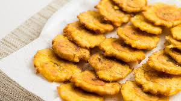

Fried Tostones

Description
Fried tostones are a great, easy and quick snack or side dish. Great for dipping in either a mixture of mayo and ketchup or garlic and olive oil.
Ingredients
- 2 Green Plantains
- 1 cup Vegitable oil
- Salt to taste
Recipe Instructions
- Pour oil into frying pan and set butner on medium high.
- While oil is heating, cut each end off of the Plantains. Slice down the skin of the plantain from end to end, then use thumbs to peel off skin.
- Cut about 1 inch slices of plantain slightly diagonal.
- Place slices in oil for a few minutes and flip once.
- Once the plantains start to brown remove from oil and place on paper towel.
- Use either two plates or plantain smasher to flatten the semi-cooked plantain.
- Continue frying flattened plantains for an additional 5 minutes or so, flipping one more time until desired crispyness.
- Add salt to taste.
Return to main page